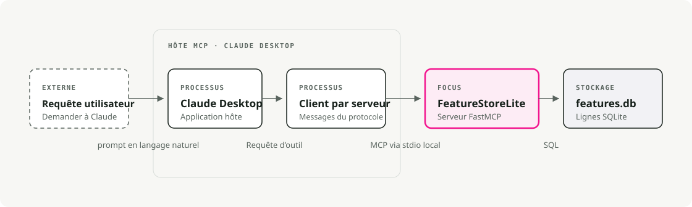
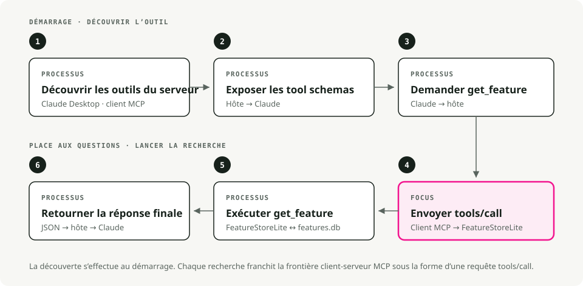
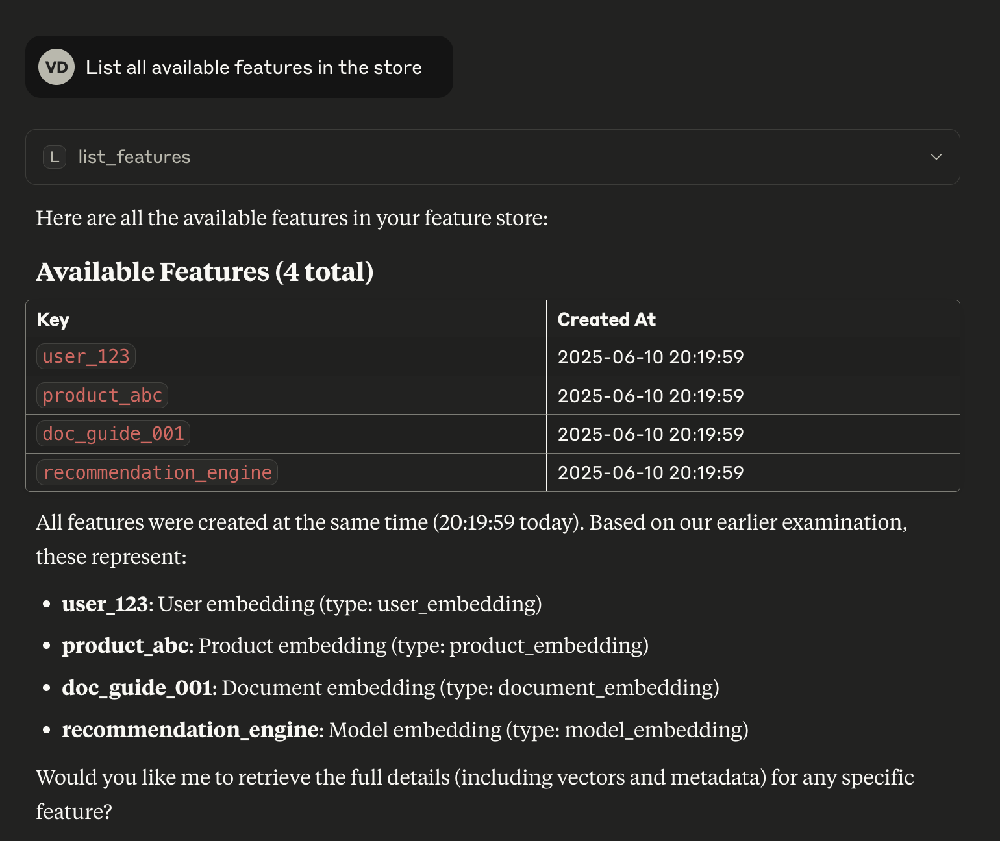

Traduction automatique
Cet article a été traduit automatiquement depuis la version originale en anglais.
Tutoriel sur le serveur MCP avec uv et FastMCP : Créer un serveur FeatureStoreLite
Ce tutoriel sur les serveurs MCP permet de construire un petit serveur de stockage de fonctionnalités à l’aide de FastMCP, de le faire tourner avec uv, et de l’intégrer à Claude Desktop.
En résumé : Un petit serveur FastMCP suffit pour exposer une utilité locale utile à un agent. Utilisez uv pour une configuration reproductible, restreignez les limites du serveur, validez les entrées à l’aide de schémas typés, et testez l’outil MCP avant de le connecter à un modèle.
Qu’est-ce qu’un serveur MCP ?
Le Model Context Protocol (MCP) est une norme ouverte permettant de relier des assistants IA tels que Claude à des données et des outils externes. Une seule norme, un seul ensemble de conventions, au lieu d’une intégration spécifique pour chaque outil que vous souhaitez exposer.
Dans ce tutoriel, nous construirons un serveur MCP FeatureStoreLite. Il se situe entre un LLM et un feature store (une base de données de caractéristiques ML précalculées) et expose des outils permettant de consulter et d’écrire des vecteurs de caractéristiques indexés par utilisateur, produit ou document.
Pourquoi le construire ?
Vous êtes ingénieur en ML en train de déboguer une chaîne de traitement. Au lieu de recourir à SQL ou d’écrire un script rapide pour vérifier les valeurs des caractéristiques, vous demandez directement à Claude : « Quel est le vecteur de caractéristiques pour l’utilisateur_123 ? » ou « Montrez-moi les métadonnées du produit_abc. » C’est le serveur MCP qui rend cela possible.
Pourquoi l’utiliser uv?
nous utiliserons UV , un installateur de paquets Python et gestionnaire de projet bien plus rapide que pip, qui gère en même temps la résolution des dépendances et les environnements virtuels. La autre raison : uv run --with mcp[cli] ... Nous pourrons déclarer les dépendances en ligne dans la configuration de Claude Desktop plus tard, ce qui évite de devoir gérer un environnement virtuel distinct à synchroniser.
Aperçu de l’architecture
Les quatre composants et leur interaction :

- L’utilisateur pose une question en langage naturel.
- Claude Desktop est le client MCP. Il sélectionne un outil en fonction de la question et l’appelle.
- Le nôtre
FastMCPLe serveur exposeget_featureetstore_featureen tant qu’outils MCP. - SQLite sert de stockage de base de données pour les vecteurs de caractéristiques.
2. Configuration et installation
2.1. Installation uv
Si vous ne les possédez pas déjà uv, installez-le. Le reste du tutoriel suppose qu’il est déjà présent sur votre système. PATH.
# macOS/Linux
curl -LsSf https://astral.sh/uv/install.sh | sh
# Or via Homebrew
brew install uv
2.2. Initialiser le projet
Créez un nouveau répertoire et initialisez un projet Python. uv init crée un pyproject.toml pour vous.
# Create project directory
mkdir mcp-featurestore
cd mcp-featurestore
# Initialize Python project
uv init
# Add the MCP SDK with CLI tools
uv add "mcp[cli]"
3. Construction du serveur
Deux fichiers, séparés par domaine de responsabilité :
database.pygère les opérations SQLite.featurestore_server.pydéfinit le serveur MCP.
3.1. La couche de base de données (database.py) database.py:
# database.py
import json
import os
import sqlite3
def get_db_path() -> str:
"""Get the database path - always in the script's directory"""
script_dir = os.path.dirname(os.path.abspath(__file__))
return os.path.join(script_dir, "features.db")
def init_db() -> None:
"""Initialize the feature store database with table and sample data"""
conn = sqlite3.connect(get_db_path())
conn.execute("""
CREATE TABLE IF NOT EXISTS features (
key TEXT PRIMARY KEY,
vector TEXT NOT NULL,
metadata TEXT,
created_at TIMESTAMP DEFAULT CURRENT_TIMESTAMP
)
""")
# Sample data for experimentation
example_features = [
(
"user_123",
"[0.1, 0.2, -0.5, 0.8, 0.3, -0.1, 0.9, -0.4]",
json.dumps({"type": "user", "id": 123, "segment": "premium"}),
),
(
"product_abc",
"[0.7, -0.3, 0.4, 0.1, -0.8, 0.6, 0.2, -0.5]",
json.dumps({"type": "product", "id": "abc", "category": "electronics"}),
),
]
# Insert if not exists
for key, vector, metadata in example_features:
try:
conn.execute(
"INSERT INTO features (key, vector, metadata) VALUES (?, ?, ?)",
(key, vector, metadata),
)
except sqlite3.IntegrityError:
pass # Already exists
conn.commit()
conn.close()
def get_db_connection() -> sqlite3.Connection:
"""Get a database connection"""
return sqlite3.connect(get_db_path())
if __name__ == "__main__":
init_db()
print("✅ Database initialized successfully!")
Initialiser la base de données :
uv run python database.py
3.2. Le serveur MCP (featurestore_server.py)
FastMCP Il effectue la majeure partie du travail. En décorant une fonction Python ordinaire, celle-ci est enregistrée en tant qu’outil ou ressource MCP. La documentation devient la description que voit le LLM ; il convient donc de la rédiger pour un LLM, et non uniquement pour les humains.
Créer featurestore_server.py:
# featurestore_server.py
import json
from mcp.server.fastmcp import FastMCP
from database import get_db_connection, init_db
# Initialize the MCP Server
mcp = FastMCP("FeatureStoreLite")
# Ensure DB is ready when server starts
init_db()
@mcp.resource("schema://main")
def get_schema() -> str:
"""
Resource: Provide the database schema.
Resources are passive data that LLMs can read like files.
"""
conn = get_db_connection()
try:
schema = conn.execute(
"SELECT sql FROM sqlite_master WHERE type='table'"
).fetchall()
return "\n".join(sql[0] for sql in schema if sql[0]) or "No tables found."
finally:
conn.close()
@mcp.tool()
def store_feature(key: str, vector: str, metadata: str | None = None) -> str:
"""
Tool: Store a feature vector.
Tools are executable functions that LLMs can call to perform actions.
"""
conn = get_db_connection()
try:
# Validate that vector is valid JSON
json.loads(vector)
conn.execute(
"INSERT OR REPLACE INTO features (key, vector, metadata) VALUES (?, ?, ?)",
(key, vector, metadata),
)
conn.commit()
return f"Successfully stored feature '{key}'"
except json.JSONDecodeError:
return "Error: Vector must be a valid JSON array string (e.g., '[0.1, 0.2]')"
except Exception as e:
return f"Error: {str(e)}"
finally:
conn.close()
@mcp.tool()
def get_feature(key: str) -> str:
"""
Tool: Retrieve a feature vector by key.
"""
conn = get_db_connection()
try:
row = conn.execute(
"SELECT vector, metadata FROM features WHERE key = ?", (key,)
).fetchone()
if row:
return json.dumps(
{
"key": key,
"vector": json.loads(row[0]),
"metadata": json.loads(row[1]) if row[1] else None,
},
indent=2,
)
return f"Feature '{key}' not found."
finally:
conn.close()
@mcp.tool()
def list_features() -> str:
"""
Tool: List all available feature keys.
"""
conn = get_db_connection()
try:
rows = conn.execute("SELECT key FROM features").fetchall()
return json.dumps([row[0] for row in rows])
finally:
conn.close()
if __name__ == "__main__":
mcp.run()
4. Test avec l’inspecteur MCP
Avant de l’intégrer à Claude, effectuez une vérification de base du serveur à l’aide de l’inspecteur MCP. Il s’agit d’une petite interface web permettant d’appeler des outils et de lire des ressources directement.
uv run mcp dev featurestore_server.py
La commande lance le serveur et ouvre l’Inspecteur dans votre navigateur (généralement à http://localhost:5173).

Appel get_feature avec key="user_123". Si le serveur renvoie le JSON de la ligne de semis, il fonctionne correctement.
5. Se connecter à Claude Desktop
Une fois que l’Inspecteur confirme que le serveur fonctionne, enregistrez-le auprès de Claude Desktop.
5.1. Configurer Claude
Modifiez le fichier de configuration de Claude Desktop :
- macOS :
~/Library/Application Support/Claude/claude_desktop_config.json - Windows :
%APPDATA%/Claude/claude_desktop_config.json
ajoutez votre serveur à la mcpServers objet :
{
"mcpServers": {
"featurestore": {
"command": "uv",
"args": [
"run",
"--with",
"mcp[cli]",
"mcp",
"run",
"/ABSOLUTE/PATH/TO/mcp-featurestore/featurestore_server.py"
]
}
}
}
Important : le chemin vers
featurestore_server.pyIl doit s’agir d’un chemin absolu. Un chemin relatif échouera en silence, car Claude Desktop s’exécute depuis un répertoire de travail différent.
5.2. Fonctionnement de l’interaction
Voici ce qui se produit du début à la fin lorsque Claude a besoin de rechercher une fonctionnalité :

- Claude identifie les outils disponibles (
get_feature,list_features, etc.). - Il détermine que la question nécessite des données provenant du feature store.
- Il génère une requête vers un outil et l’envoie à votre serveur.
- Le serveur exécute la fonction Python et renvoie le résultat.
- Claude utilise ce résultat pour écrire la réponse finale.
5.3. Exemples de requêtes
Redémarrez Claude Desktop et essayez quelques prompts :
-
« Énumérez toutes les fonctionnalités disponibles. »

-
« Obtenir le vecteur de caractéristiques pour user_123. »

-
« Stocker une nouvelle fonctionnalité pour ‘new_item’ avec le vecteur [0.5, 0.5] et les métadonnées {'type': 'test'}. »
6. Résolution des problèmes
Quelques modes de défaillance à connaître :
-
« Échec de la connexion au serveur » :
- Vérifier les journaux à
~/Library/Logs/Claude/mcp.logsur macOS. - Vérifier que la configuration utilise un chemin absolu et non un chemin relatif.
- Vérifier
uvprésent dans Claude DesktopPATH. Si ce n’est pas le cas, indiquez le chemin binaire complet (which uvcela vous indiquera où il se trouve).
- Vérifier les journaux à
-
« Erreur d’exécution de l’outil » :
- Le reproduire dans l’Inspecteur avec
uv run mcp dev featurestore_server.py. L’inspecteur affiche l’erreur brute, que Claude Desktop absorbe généralement. - Vérifiez que
features.dbest en cours de création à côté dedatabase.py. Si votre répertoire de travail change, le chemin relatif au script dansget_db_path()c’est ce qui vous sauve.
- Le reproduire dans l’Inspecteur avec
7. Conclusion
Voilà tout : un FastMCP serveur, un stockage de secours SQLite, ainsi qu’une configuration de Claude Desktop pointant vers un uv run commande. La même structure s’applique à tout ce que l’on peut encapsuler dans une fonction Python. Remplacez les appels à SQLite par un véritable stockage de fonctionnalités, une API interne ou un registre de modèles, et le serveur restera compact.
Points clés
- MCP définit des limites pour les outils, mais ce n’est pas une raison d’exposer toutes les fonctions internes.
- Gardez les outils du serveur petits, typés et faciles à tester, même sans LLM.
- Utilisez uv afin que l’environnement de tutoriel puisse être reconstruit à partir de zéro.
- Considérez le serveur MCP comme du code de production dès qu’un agent peut y accéder.